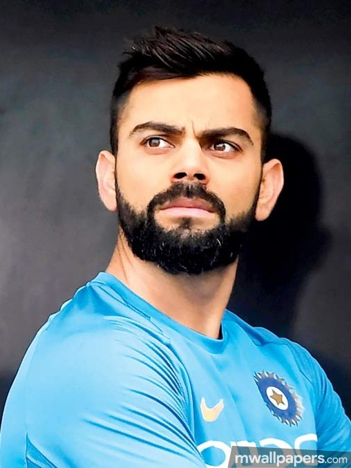

Virat Kohli
The King of Cricket

Here is The Some Points about Virat Kohli
- Virat Kohli was born on 5th November 1988 in Delhi in a Punjabi family to Prem and Saroj Kohli. His brother Vikas Kohli is a businessman. His sister’s name is Bhavna Kohli. Prem Kohli was a criminal lawyer
- Kohli started his professional career by joining West Delhi cricket academy in 1998 and trained under Rajkumar Sharma. He played all age-group tournaments for Delhi before getting selected in the Indian U-19 team in 2006 for the tour of England.
- His nickname is “Cheeku”, his childhood coach Ajeet Chaudhury at the West Delhi Cricket academy gave him the nickname.
- Kohli’s idol is Sachin Tendulkar.
- Virat led India to win the 2008 U-19 World Cup 2008. He was the 3rd highest run-getter with 635 runs in 6 matches.
- Kohli is one of the most passionate players the world has ever seen. During a Rajni Trophy match against Karnataka, his father died due to a stroke but determined Kohli decided to play the match and made 90 before attending the funeral of his father.
- Virat Kohli made his first appearance in international cricket in an ODI match against Sri Lanka in 2008 as the first choice openers Sachin and Sehwag missed the series due to injury. He could only score 12 runs in the first match.
- Virat was a part of the Indian team which won the 2011 World Cup under Dhoni’s leadership after 28 years. His first-ever World Cup and he ended up being a winner.